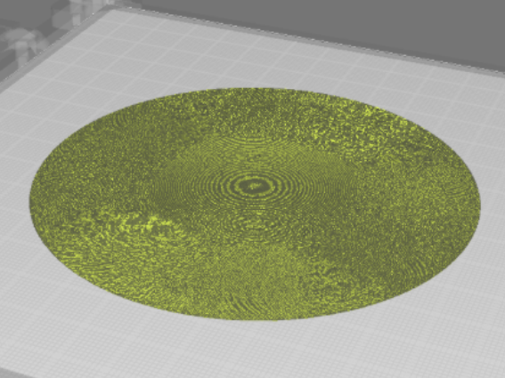
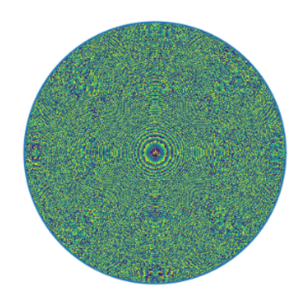
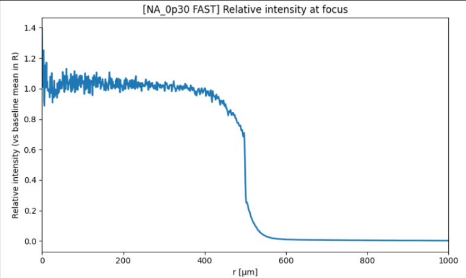
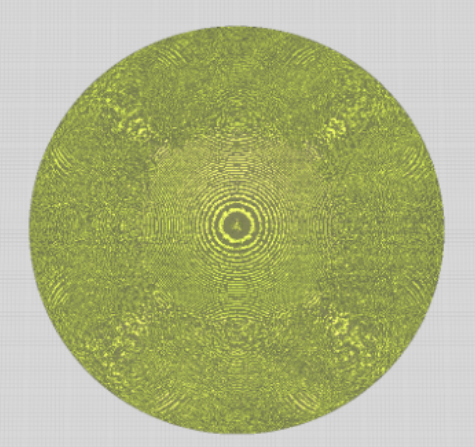

COMPUTATIONAL MODELING · MICRO-OPTICS · CAD/STL WORKFLOW
Gaussian-to-Flat-Top Microlens Beam Shaper
A computationally designed refractive microlens that converts an 800 nm Gaussian beam into a circular flat-top intensity profile and exports the final design as a fabrication-ready STL.

THE CHALLENGE
Designing a printable micro-optical component
Many laser systems naturally produce Gaussian intensity profiles, which can create uneven energy delivery in applications such as micromachining, lithography, and precision materials processing.
This project focused on designing a compact refractive microlens that reshapes a Gaussian beam into a flat-top distribution while remaining compatible with high-resolution microfabrication.
TECHNICAL APPROACH
From optical simulation to physical geometry
I implemented a Python-based scalar diffraction workflow using angular-spectrum propagation and an iterative Fourier transform algorithm. The resulting wrapped phase map was converted into a continuous sag profile for a single refractive surface.
The final design used a numerical aperture of 0.3 and was converted into a watertight STL model with a 1 mm circular lens diameter and a 1 micron base layer.


RESULTS
Final simulated performance
The final NA = 0.3 design produced a compact flat-top beam with a steep transition at the target radius. The simulated design achieved 87.84% transmissive efficiency, a minimum feature size of 1.72 microns, and a ripple value of 38.57% inside the design radius.
The STL was successfully imported into Cura LE, confirming that the simulation output could be translated into fabrication-ready geometry without manual mesh repair.
